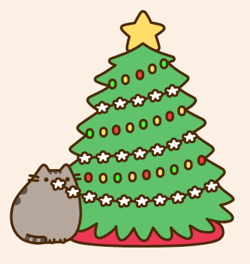

Новый год— самый чудесный и красивый праздник!
Это украшенная ёлка, разноцветные огоньки гирлянд, запах мандаринов, бой часов,
подарки и надежда на лучшее в наступающем году…

Но каждый год люди жалуются:
«Где же мое новогоднее настроение?
И снега то за окном не видно, какой тут праздник?»
Вот для этого и был придуман этот сайт :)
Узнайте об истории праздника, его традициях в разных странах, а также полюбуйтесь на милых котиков и заглядите в сюрприз!